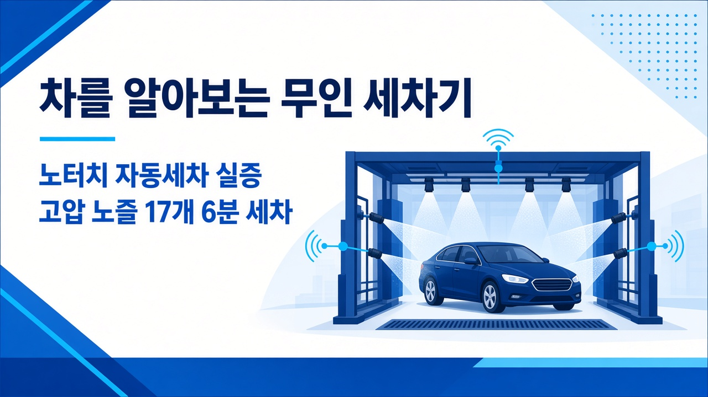
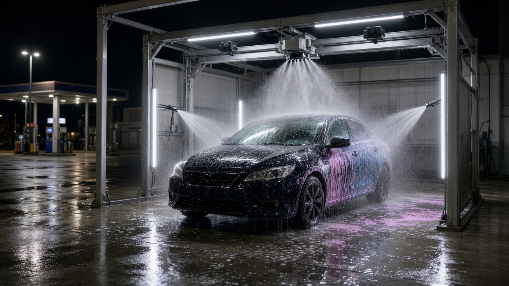

노터치 자동세차 워싱데이, 그린에이아이와 손잡고 차를 알아보는 무인 세차기 실증 나선다

주유소 옆 무인 자동세차기에 차를 넣을 때마다 내 차 크기나 모양을 제대로 알고 물을 뿌리는 걸까 궁금했던 분들 계실 거예요. 노터치 무인 자동세차 브랜드 워싱데이를 운영하는 세차하는날이 그린에이아이와 손잡고 여러 센서와 엣지 AI를 세차기에 붙이는 업무협약을 맺었다고 전자신문이 10월 15일 보도했습니다. 엣지 AI는 멀리 있는 서버가 아니라 기계 안에서 바로 판단하는 인공지능을 말해요. 이번 협약으로 무엇을 하려는지, 세차장 입장에서는 어떤 의미인지 정리해 볼게요.
이번 협약에서 두 회사가 하기로 한 일
두 회사는 여러 센서로 정보를 모으는 멀티센싱과 엣지 AI 기술을 바탕으로 무인 세차 솔루션을 개발하고 고도화하기로 했습니다. 구체적으로는 기술과 아이디어 교류, 실증용 시험장과 운영 데이터 공유, 그리고 이 기술을 실제 무인 세차기에 적용하고 검증하는 일을 함께 추진합니다. 아직 완성된 제품을 내놓은 단계가 아니라 현장에서 시험하고 검증하는 단계라는 점을 알고 보시면 됩니다.
역할 나누기, 기술은 그린에이아이 현장은 워싱데이
그린에이아이는 멀티센싱과 엣지 AI로 공간을 인식하는 기술을 개발하는 회사입니다. 이번 협력에서는 차량 정보를 인식하고 분석하는 기술을 고도화하고, 세차장을 비롯한 여러 차량관리 공간에 쓸 수 있는 솔루션 개발을 맡습니다. 워싱데이는 직접 개발한 노터치 무인 자동세차기와 운영 시스템, 현장 운영 경험을 바탕으로 실증 환경과 운영 데이터를 내놓습니다. 개발한 기술이 실제 세차장에서 쓸모가 있는지 검증하는 역할이에요.
워싱데이 노터치 세차기는 어떤 장비인가
작년 11월 일간스포츠 보도를 보면 세차하는날은 2022년 충북 청주에서 세워진 노터치 자동세차기 개발 회사입니다. 20여 년간 주유소를 운영한 김현기 대표가 브러시형 세차기가 도장에 미세 흠집을 남기는 문제를 보고 브러시를 쓰지 않는 세차기를 만들었다고 해요. 차가 들어오면 분사 각도가 자동으로 맞춰지고 17개의 고압 노즐로 이물질을 씻어 낸 뒤 버블 세제와 스노우폼, 레인왁스까지 이어지는데 전체 시간은 6분이라고 소개됐습니다. 당시 기준으로 전국 주유소 80여 곳에 들어가 24시간 무인으로 운영되고 있었고, 10년 안에 1,000곳 입점을 목표로 내걸었습니다.

택시 버스 화물차, 자율주행차 관리까지 넓힌다
두 회사는 협력 범위를 자율주행 차량 운영과 관리 분야로 넓히는 방안도 논의했습니다. 실증을 거쳐 자율주행차의 센서와 외관 상태를 인식하고 관리하는 기술이 구현 가능한지 검토하겠다는 계획이에요. 택시, 버스, 화물차처럼 다양한 차종에 쓸 수 있는 무인 세차 기술을 고도화하고, 차량과 센서 상태를 살피는 기술도 단계적으로 검증해 나간다고 밝혔습니다.
세차장 운영자가 이번 소식에서 볼 점
이번 협약의 핵심은 무인 세차기가 그냥 정해진 대로 물을 뿌리는 기계에서 들어온 차를 인식하고 판단하는 장비로 가려 한다는 데 있습니다. 다만 지금은 협약과 실증 단계라서 세차 품질이나 운영이 실제로 얼마나 달라지는지는 실증 결과가 나와야 알 수 있습니다. 택시나 버스처럼 차를 많이 굴리는 곳까지 겨냥하고 있다는 점도 앞으로 지켜볼 대목입니다.
참고한 기사: 전자신문 세차하는날 워싱데이 그린에이아이 엣지 AI 기반 무인 세차 솔루션 개발 MOU 2026년 10월 15일, 일간스포츠 신뢰와 전문성으로 자동 세차 산업 혁신 가져오다 2025년 11월 6일
태그
워싱데이 세차하는날 그린에이아이 노터치세차 무인자동세차 엣지AI 무인세차장 자동세차기 자율주행차관리 세차장창업